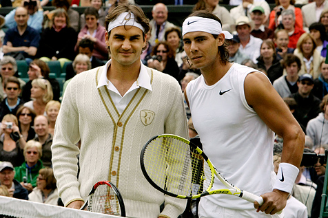
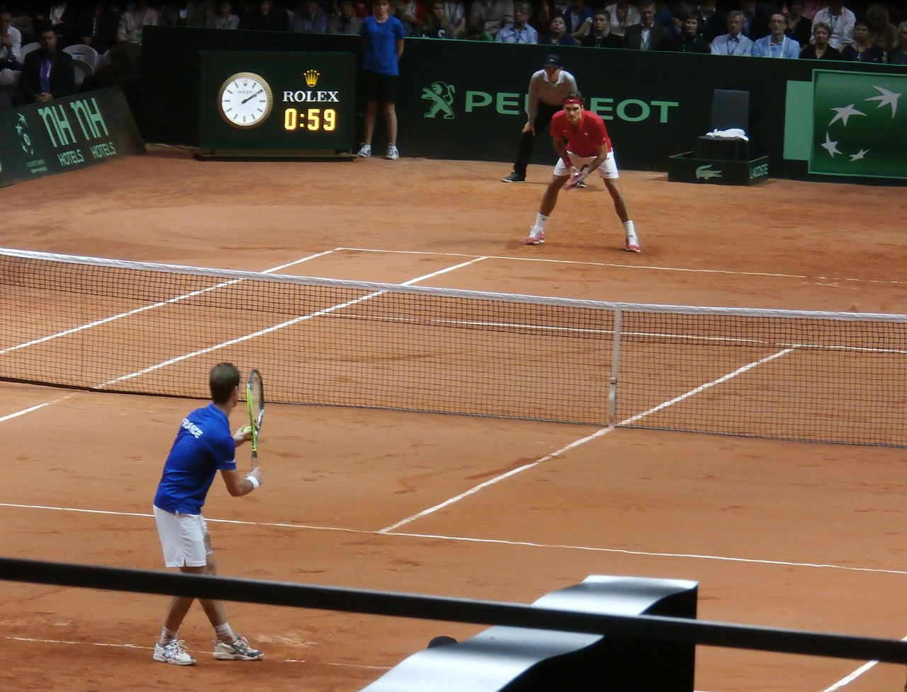

Roger Federer
 The 2012 season for Federer had his most match wins since 2006 and his highest winning percentage and number of titles won since 2007.
The 2012 season for Federer had his most match wins since 2006 and his highest winning percentage and number of titles won since 2007.
Federer reached the semifinal of the 2012 Australian Open, setting up a 27th career meeting with Nadal, a match he lost in four sets. He then won the Rotterdam Open for the first time since 2005, defeating Juan Martín del Potro. Federer played in the 2012 Dubai Tennis Championships, where he defeated Andy Murray in the final and won the championship title for the fifth time in his career. Federer then moved on to the Indian Wells Masters, where he defeated Rafael Nadal in the semifinals, and John Isner in the final. Federer won the title for a record fourth time, and, in doing so, equalled Nadal's record of 19 ATP Masters 1000 titles.Federer went on to compete at the Madrid Masters on the new blue clay surface, where he beat Tomáš Berdych in the final, thus regaining the No. 2 ranking from Rafael Nadal. In the French Open, Federer made the semifinals before losing to Djokovic in straight sets, in a rematch of previous year's semifinal.In the 2012 Summer Olympics, Federer played a 4-hour 26-minute semifinal against del Potro where Federer won 19–17 in the third and final set. In a lopsided match, he lost to Murray in straight sets in the final, winning a silver medal for his country.At the Shanghai Masters, after defeating Wawrinka in the third round, Federer confirmed his 300th week at No. 1. Federer made it to the finals of the ATP Finals, where he lost to Djokovic in two sets

